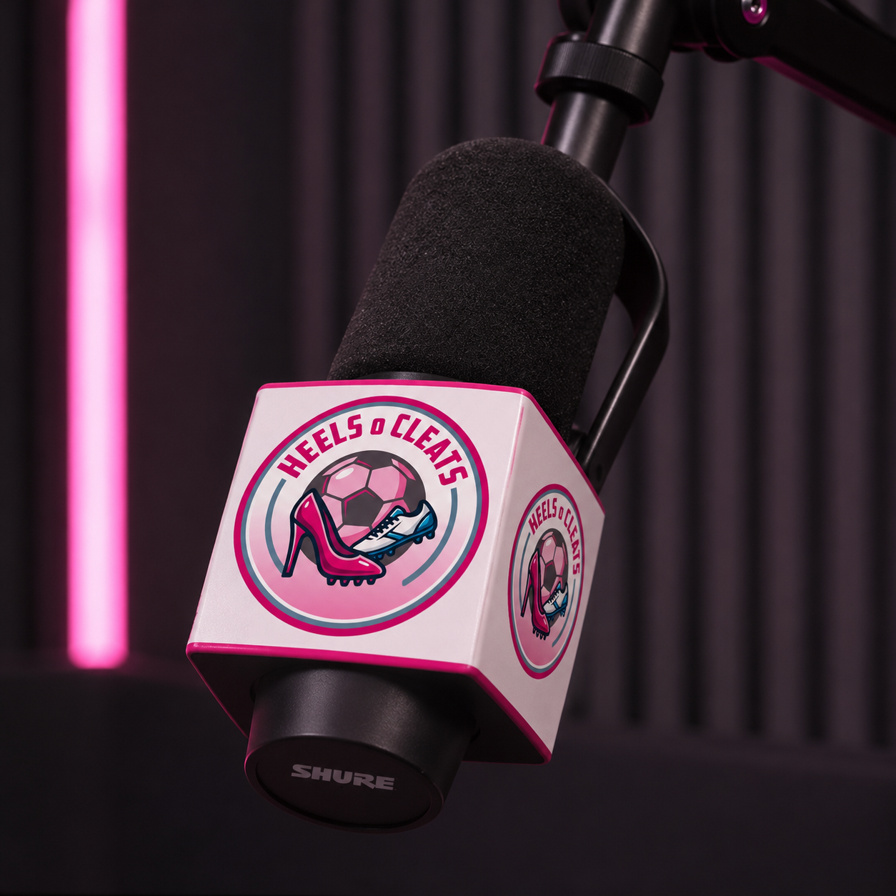

Avsnitt 1
Introduktion till podden. Lär känna Sally.
Lyssna →
HEELS & CLEATS PRESENTERAR
Fotboll, åsikter och diskussioner!
Här hittar du våra senaste avsnitt med heta
snackisar, gäster
och allt som händer i
fotbollsvärlden.
Champions League roundup, Arsenal är tråkiga...
Vi diskuterar de senaste
nyheterna och snackisarna.
▶ Lyssna nu